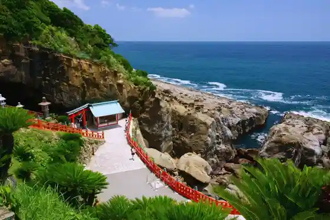
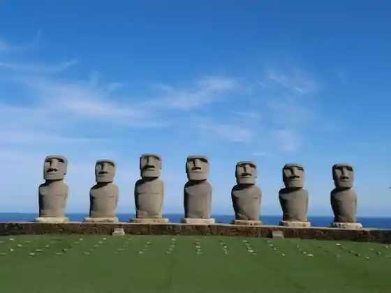
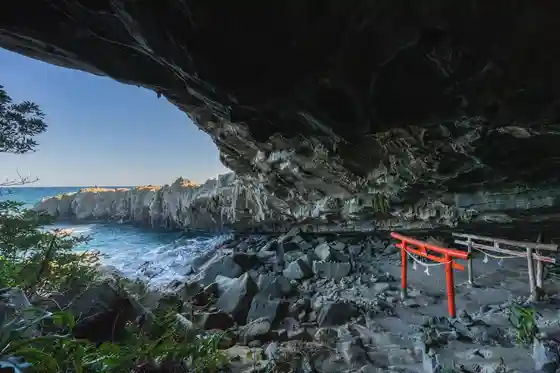
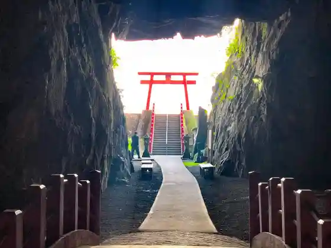

Udo Shrine
Nichinanshi, Miyazaki · 0987-29-1001 · Official / source link

Sanmesse Nichinanshi
Nichinanshi, Miyazaki · 0987-29-1900 · Official / source link

Obi Castle Town
Nichinanshi, Miyazaki · 0987-67-6029 · Official / source link
Nakiri Shrine
Nichinanshi, Miyazaki · 0987-29-1001 · Official / source link

Gion Shrine
Nichinanshi, Miyazaki · 0987-31-1134 · Official / source link

Ihachi Ju Gorge
Nichinanshi, Miyazaki · 0987-55-2111 · Official / source link
Marimbyuwa Nichinan
Nichinanshi, Miyazaki · 0987-64-4288 · Official / source link
Aburatsu Aka Renga Kan (Kyu Kono Muneyasu Ie Soko)
Nichinanshi, Miyazaki · 0987-27-3315 · Official / source link
Roadside Station Nango
Nichinanshi, Miyazaki · 0987-64-3055 · Official / source link
Roadside Station Kitago
Nichinanshi, Miyazaki · 0987-32-3256 · Official / source link
Matsuo no Maru
Nichinanshi, Miyazaki · 0987-25-1905 · Official / source link
Tenpuku Kyujo
Nichinanshi, Miyazaki · 0987-22-5050 · Official / source link
Obi Shiro History Museum
Nichinanshi, Miyazaki · 0987-25-1905 · Official / source link
Minato no Eki Meitsu
Nichinanshi, Miyazaki · 0987-64-1581 · Official / source link
Sho Village Jutaro Memorial Museum
Nichinanshi, Miyazaki · 0987-25-1905 · Official / source link
Udo Senjojiki Kigan
Nichinanshi, Miyazaki · Official / source link
Roadside Station Sakaya
Nichinanshi, Miyazaki · 0987-26-1051 · Official / source link
Izaki Hana Park
Nichinanshi, Miyazaki · 0987-31-1134 · Official / source link
Sancherii Kitago
Nichinanshi, Miyazaki · 0987-67-4737 · Official / source link
Komamiya Shrine
Nichinanshi, Miyazaki · 0987-23-8520 · Official / source link
Nichinanshi Kitago Town Gym (Sakura Ariina)
Nichinanshi, Miyazaki · 0987-55-2897 · Official / source link
Shio Gaku Shrine
Nichinanshi, Miyazaki · 0987-55-3252 · Official / source link
Shochu Dojo
Nichinanshi, Miyazaki · 0987-55-4134 · Official / source link
Nichinanshi Kitago Kantorii Club (Kyu : Jieizu Nichinanshi)
Nichinanshi, Miyazaki · 0987-55-4177 · Official / source link
Nichinanshi Sogo Sports Park (Tamokuteki Gym)
Nichinanshi, Miyazaki · 0987-22-5050 · Official / source link
Nango Sutajiamu (Nango Chuo Park)
Nichinanshi, Miyazaki · 0987-64-3341 · Official / source link
Kitago no Irohamomiji
Nichinanshi, Miyazaki · 0987-55-2112 · Official / source link
Umegahama (Raion Iwa)
Nichinanshi, Miyazaki · 0987-31-1134 · Official / source link
Hanatate Park
Nichinanshi, Miyazaki · 0987-31-1134 · Official / source link
Nichinanshi Dam
Nichinanshi, Miyazaki · 0987-23-4661 · Official / source link
Enokihara Shrine
Nichinanshi, Miyazaki · 0987-68-1028 · Official / source link
Horikawa Hashi
Nichinanshi, Miyazaki · 0987-31-1134 · Official / source link
Kaze Ta Hama (Akira Hisashi Sono)
Nichinanshi, Miyazaki · 0987-31-1134 · Official / source link
Kura Saki Lighthouse
Nichinanshi, Miyazaki · 0987-22-3264 · Official / source link
Eimatsu Beach Campground
Nichinanshi, Miyazaki · 0987-64-0002 · Official / source link
Nichinanshi Oto River Park Famiriisupotsu Land
Nichinanshi, Miyazaki · 0987-55-2897 · Official / source link
Sakaya Campground
Nichinanshi, Miyazaki · 0987-26-1216 · Official / source link
Obisugi Domu (Nichinanshi Sogo Sports Park)
Nichinanshi, Miyazaki · 0987-22-5050 · Official / source link
Hachi Yuki Su Koen Campground
Nichinanshi, Miyazaki · 0987-55-3828 · Official / source link
Tomi Tsuchi Beach
Nichinanshi, Miyazaki · 0987-29-1828 · Official / source link
Toko Tera Kyujo (Nichinanshi Sogo Sports Park)
Nichinanshi, Miyazaki · 0987-22-5050 · Official / source link
Nichinanshi Sogo Sports Park (Rikujokyogijo)
Nichinanshi, Miyazaki · 0987-22-5050 · Official / source link
Odo Tsu Beach
Nichinanshi, Miyazaki · 070-9505-3141 · Official / source link
Bosai Park (Nichinanshi Sogo Sports Park)
Nichinanshi, Miyazaki · 0987-22-5050 · Official / source link
Nango Castle Ruins Cherry Blossoms
Nichinanshi, Miyazaki · 0987-31-1134 · Official / source link
Nango Toreningurumu (Nango Chuo Park)
Nichinanshi, Miyazaki · 0987-64-3341 · Official / source link
Nichinanshi Kitago Town Hachi Yuki Su Park (Tenisukoto)
Nichinanshi, Miyazaki · 0987-55-3828 · Official / source link
Nango Chuo Park (Tenisukoto)
Nichinanshi, Miyazaki · 0987-64-3341 · Official / source link
Nichinanshi Sogo Sports Park (Tenisukoto)
Nichinanshi, Miyazaki · 0987-22-5050 · Official / source link
Nichinanshi Sogo Sports Park Yuei Puru
Nichinanshi, Miyazaki · 0987-23-6563 · Official / source link
Tenpuku Kyujo Okunai Tokyu Renshujo (Burupen)
Nichinanshi, Miyazaki · 0987-22-5050 · Official / source link
Nango Kuroshio Domu (Nango Chuo Park)
Nichinanshi, Miyazaki · 0987-64-3341 · Official / source link
Tenpuku Kyujo Okunai Tamokuteki Kyugijo
Nichinanshi, Miyazaki · 0987-22-5050 · Official / source link
JR Kitago Eki no Kanzakura Nichinanshi Kansaku 1 Go
Nichinanshi, Miyazaki · 0987-31-1134 · Official / source link